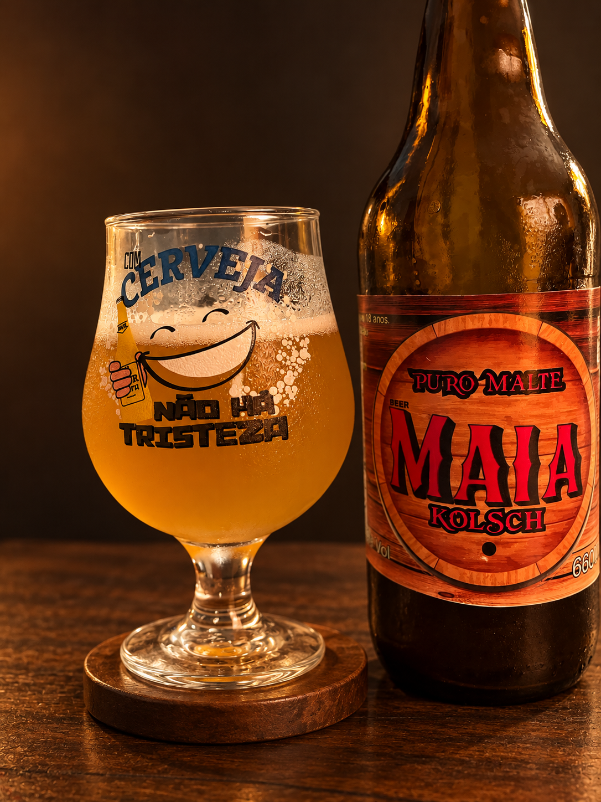
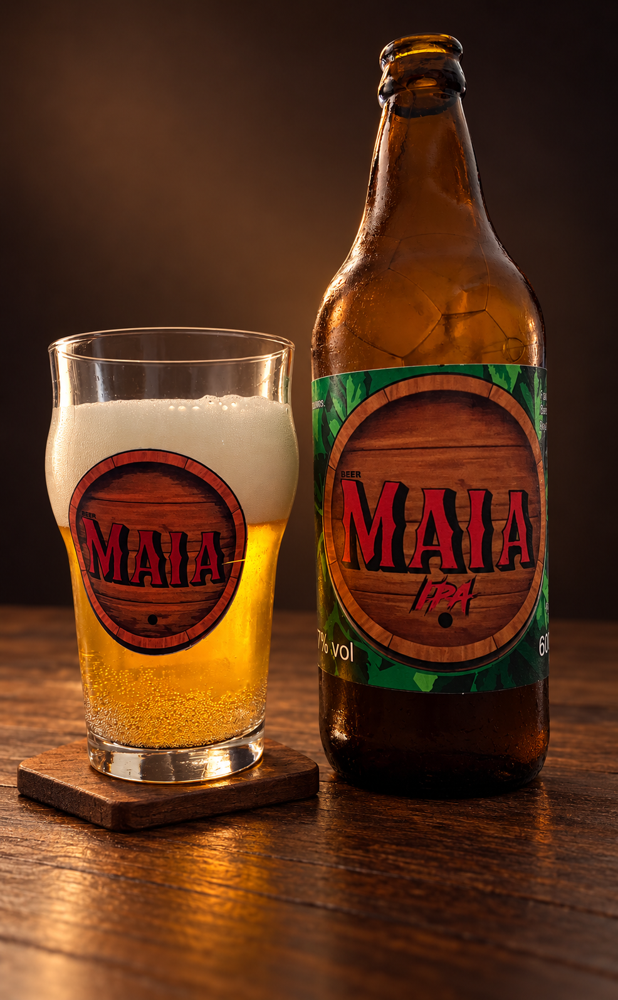
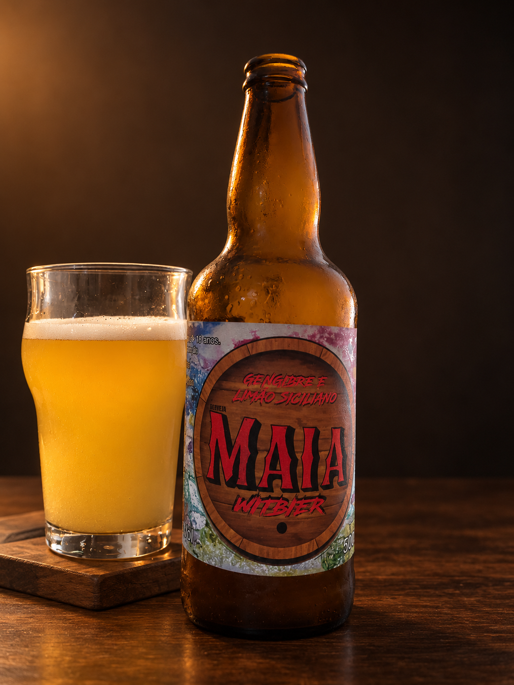
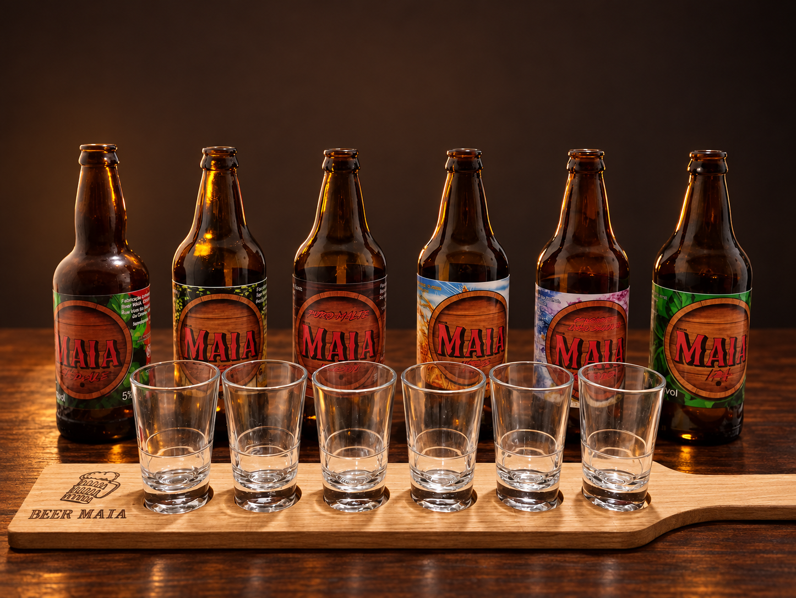

Dunkel
Cerveja de baixa fermentação, associada à tradição das cervejas escuras alemãs e ao sabor de malte torrado.
CERVEJARIA ARTESANAL • SÃO BERNARDO DO CAMPO
Conheça a Cervejaria Beer Maia, sua trajetória e a cultura por trás dos estilos de cerveja que fazem parte do nosso catálogo.
MAIS DO QUE UMA BEBIDA
A Beer Maia utiliza atualmente Instagram e WhatsApp para divulgação e atendimento. Esta página reúne essas informações em um espaço próprio, facilitando o acesso à marca, à história e aos produtos.
HISTÓRIA & TRADIÇÃO
Estilos clássicos e tradições que ajudam a entender como diferentes regiões desenvolveram suas próprias características cervejeiras.
A Cervejaria Beer Maia surgiu em 2019 a partir de um projeto acadêmico desenvolvido pelo filho do fundador durante o curso de Engenharia de Alimentos. Após a conclusão do trabalho, a produção continuou de forma independente, primeiro como hobby e depois também como fonte complementar de renda.
Cerveja de baixa fermentação, associada à tradição das cervejas escuras alemãs e ao sabor de malte torrado.
Estilo leve de baixa fermentação, ligado à tradição cervejeira da Boêmia e conhecido pela sua ampla popularização.
Estilo de perfil suave, relacionado à tradição de Munique e apresentado no projeto como criação da Spaten em 1894.
Estilo de cerveja de trigo associado à tradição cervejeira da Baviera.
Estilo inglês de cerveja forte e encorpada, apresentado no projeto como surgido no século XVIII.
Cada estilo carrega parte da história, dos ingredientes e das escolhas de uma região.
PROCESSO ARTESANAL
Transformamos água, malte, lúpulo e levedura em cerveja através de controle rígido e cuidado em cada etapa.
Preservação das cascas dos grãos e aquecimento preciso da água para a extração perfeita dos açúcares do malte.
Adição dos lúpulos para definir o aroma, amargor e sabor, seguido pelo resfriamento rápido para receber a levedura.
Transformação dos açúcares em álcool e CO₂ durante cerca de 7 dias, finalizando com a maturidade e carbonatação.
Veja a explicação completa sobre a química e os tempos de produção da Beer Maia.
Ver Processo CompletoA TAMPINHA TROUXE VOCÊ ATÉ AQUI
Confira alguns destaques da nossa produção artesanal. Conheça o catálogo completo para ver todos os nossos rótulos.

01 / KÖLSCHUma pausa com a assinatura Maia.

02 / IPAPersonalidade em cada detalhe.

03 / WEISSFeita para bons encontros.

NOSSO CATÁLOGO COMPLETO
Acesse o catálogo para conferir a ficha técnica completa, teor alcoólico (ABV), amargor (IBU) e sugestões de temperatura de todos os nossos rótulos.
CONTATO
Para conhecer a cervejaria, tirar dúvidas ou continuar o atendimento, utilize os canais oficiais abaixo.